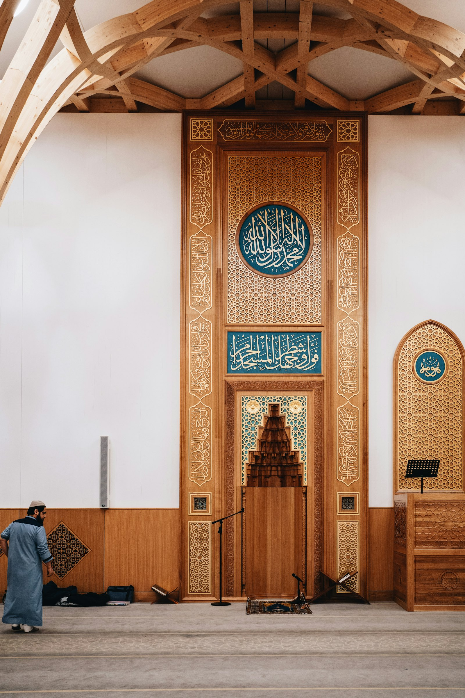
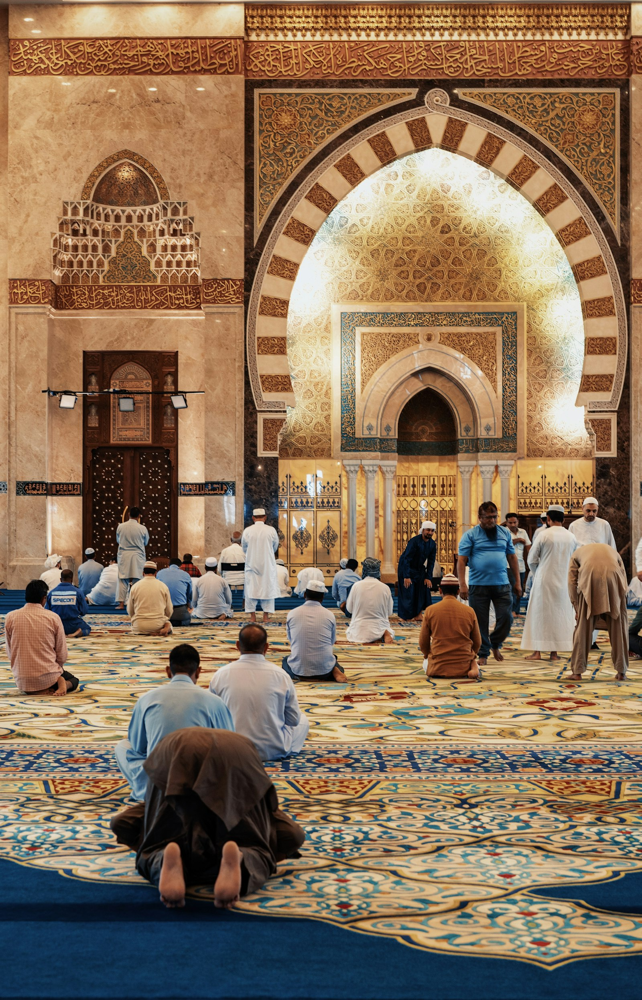
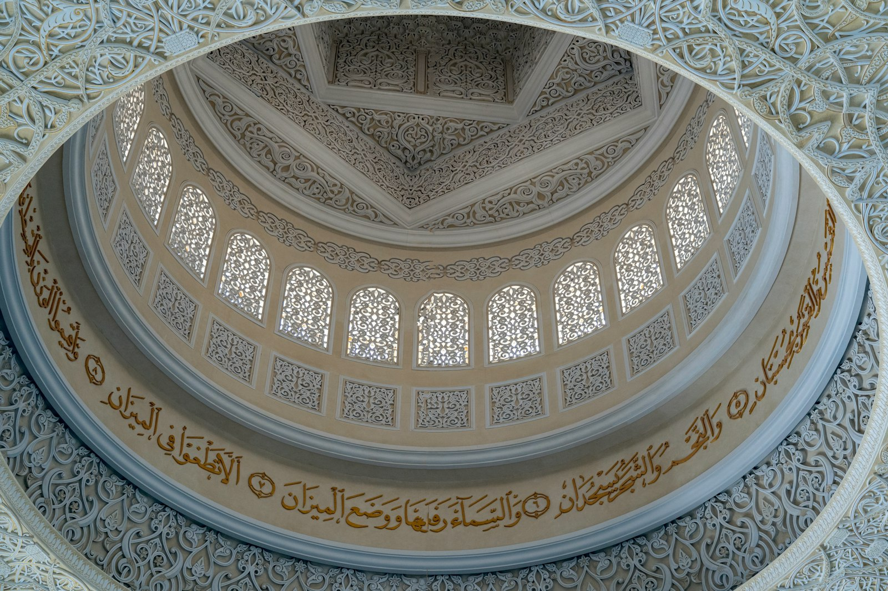
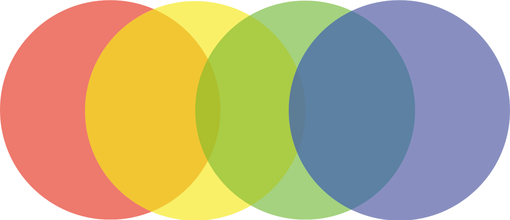
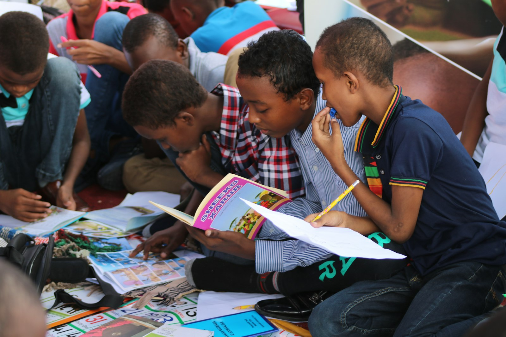

নামাজ ও জুমা
আমাদের ভবনে পাঁচ ওয়াক্ত নামাজ ও জুমার জামাতের ব্যবস্থা।
মাবিন e.V. ফ্রাঙ্কফুর্টে প্রবাসী মুসলিম পরিবারগুলোর জন্য একটি দ্বীনি ও সামাজিক আশ্রয়। এখানে রয়েছে নামাজের ব্যবস্থা, একজন আলেম ইমাম এবং ঈমান ও দুনিয়ার ভারসাম্য রক্ষার পথ।




আমাদের জামাতের পাঁচ ওয়াক্ত ও জুমার নামাজের সময়, mawaqit.net থেকে সরাসরি।
দ্রষ্টব্য: নামাজের সময় mawaqit.net থেকে লোড হয়। বাহ্যিক কনটেন্ট চালু করলে তথ্য mawaqit.net-এ স্থানান্তরিত হয়।
সামান্য দানও মসজিদের ব্যবস্থা, ইমামের খেদমত ও পরিবারগুলোর সহায়তা চালিয়ে যেতে সাহায্য করে।
আমাদের কাছে যারা আসেন, তাদের অধিকাংশই ইসলামী পরিবেশ থেকে আসা মানুষ। তাই ঈমানই আমাদের সবচেয়ে বড় অভিন্ন বন্ধন।
আমাদের ভবনে নামাজ আদায় ও আত্মিক প্রশান্তির ব্যবস্থা রয়েছে। আমরা দেখেছি, প্রবাসী মুসলিমদের ঈমানের সাথে সম্পর্ক প্রায়ই আরও গভীর — অনেক সময় সংস্কৃতি ও ধর্ম একে অপরের সাথে মিশে যায়, তাই এ দুইয়ের পার্থক্য বোঝানো জরুরি।
২০১৫ সাল থেকে আমাদের সাথে রয়েছেন একজন একাডেমিক শিক্ষায় শিক্ষিত মুসলিম ইমাম। তিনি বুঝিয়ে দেন — ইসলাম প্রকৃতপক্ষে নতুন ভাষা শেখা, জ্ঞান অর্জন ও নতুন দেশের আইন মান্য করার প্রতি উৎসাহ দেয়। ঈমান কখনোই সংহতির পথে বাধা নয়।
„নিশ্চয়ই আল্লাহ তাদের অবস্থা পরিবর্তন করেন না, যতক্ষণ না তারা নিজেদের অবস্থা পরিবর্তন করে।“
নামাজ থেকে শুরু করে শিক্ষা পর্যন্ত — আমরা প্রবাসী পরিবারগুলোর পাশে থাকি।
আমাদের ভবনে পাঁচ ওয়াক্ত নামাজ ও জুমার জামাতের ব্যবস্থা।
আলেম ইমামের সাপ্তাহিক আলোচনা — ঈমান, আখলাক ও দৈনন্দিন জীবন।
কুরআন শিক্ষার পাশাপাশি স্কুলের পড়াশোনায় সাশ্রয়ী সহায়তা।
নারী, কিশোরী ও যুবকদের জন্য নিয়মিত দ্বীনি ও সামাজিক বৈঠক।
জার্মান সমাজে চলার পথে বাংলা, জার্মান ও ইংরেজিতে আন্তরিক পরামর্শ।
ঈদ, রমজান ও বিশেষ দিনগুলোতে জামাতবদ্ধ আয়োজন ও মিলনায়তন।
নামাজ, শিক্ষা ও ভ্রাতৃত্ব — আমাদের দৈনন্দিন জীবনের কয়েকটি দৃশ্য।

বৈচিত্র্যেই শক্তি – একসাথে আমরা এক পরিবার।
মাবিন (MABIN) মানে Main Bildungs- und Integrationsforum e.V. — ৭ মার্চ ২০০৮ সালে ফ্রাঙ্কফুর্টে প্রতিষ্ঠিত একটি অলাভজনক সংগঠন।
আমাদের লক্ষ্য — প্রবাসী ও অভিবাসী পরিবারগুলোর সন্তানদের শিক্ষা ও সমাজে সম্মানজনক অংশগ্রহণে সহায়তা করা। আর আমরা বিশ্বাস করি, এ পথচলা সবচেয়ে সুন্দরভাবে হয় ঈমান ও মাতৃভাষার মাধ্যমে।
দ্বীনি মজলিস, ইফতার, শিক্ষা-সভা — আমাদের পরবর্তী আয়োজনগুলো এখানে দেখুন। সবাইকে আন্তরিক দাওয়াত।
একটি অলাভজনক সংগঠন হিসেবে আমাদের নামাজের ব্যবস্থা, ইমামের খেদমত ও সব দ্বীনি-সামাজিক কাজ মূলত আপনাদের দান ও সদকায় চলে। আপনার অবদান সরাসরি মানুষের উপকারে আসে।
মাবিন e.V. একটি স্বীকৃত অলাভজনক সংগঠন — জার্মানিতে দান কর-ছাড়যোগ্য হতে পারে।
কোনো প্রশ্ন, পরামর্শ বা সহায়তার ইচ্ছা থাকলে আমাদের লিখুন — আমরা আপনার অপেক্ষায়।
Gutleutstraße 47
60329 Frankfurt am Main, Germany
ফোন: +49 69 15391019
ফ্যাক্স: +49 69 15391485